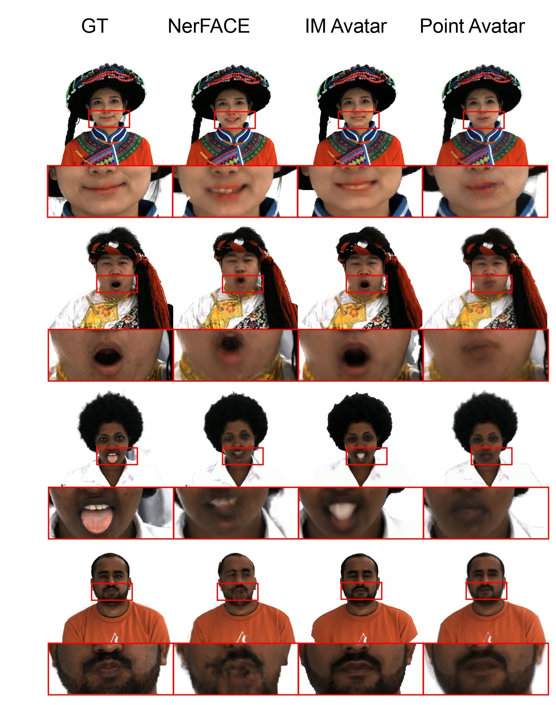
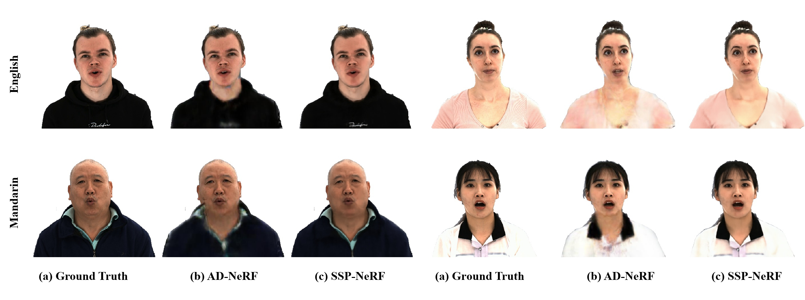
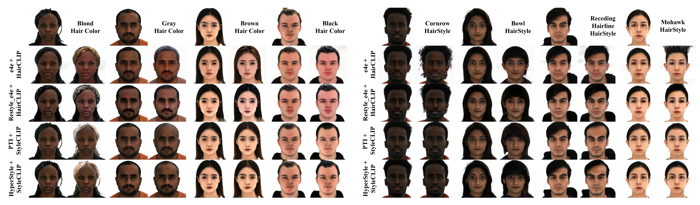
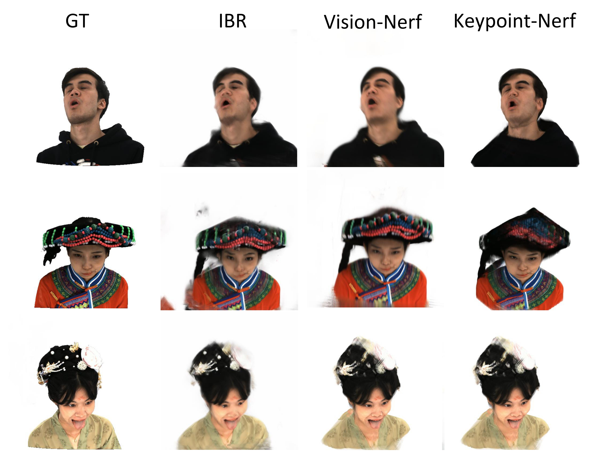

Benchmark
Novel View

Novel View Synthesis (NVS) is concerned with synthesizing views under camera viewpoint transformations from one or multiple input images. The tested methods include NGP [SIGGRAPH-2022], NeuS [NeurIPS-2021], NV [SIGGRAPH-2019] and MVP [SIGGRAPH-2021].
- NGP [SIGGRAPH-2022]
- NGP utilizes multi-resolution hash encoding to automatically focuses on relevant detail by performing a practical learning-based alternative. It is a case specific, radiance field-based method and images conditioning that fed with multi-view images and camera calibration and yield static results with neural volumetric representation.
- NeuS [NeurIPS-2021]
- NeuS is to multiview surface reconstruction that represents 3D surfaces as neural SDF, and it develops a new volume rendering method for training the implicit SDF representation. It is a case specific, SDF-based method and images conditioning that fed with multi-view images and camera calibration and yield static results with neural SDF representation.
- NV [SIGGRAPH-2019]
- NV models objects and scenes with a semi-transparent volume representation that end-to-end learns from multi-view RGB images. It is a case specific, SDF-based method and images conditioning that fed with multi-view images and camera calibration and yield dynamic results with neural volumetric representation.
- MVP [SIGGRAPH-2021]
- MVP is a 3D neural scene representation supervised by 2D and 3D representation, and it generates volumetric and primitive-based paradigms under a unified representation. It is a case specific, radiance field-based and images conditioning method that fed with multi-view images and camera calibration and yield dynamic results with neural volumetric representation. It needs parametric models as facial prois.
Novel Expression
Novel Expression Synthesis (NES) is to generate the new expression of a subject from one expression of the same subject. The tested methods include NeRFace [CVPR-2021], IM Avatar [CVPR-2022], and PointAvatar [Arxiv-2022].
- NeRFace [CVPR-2021]
- NeRFace renders controllable 4D facial avatars based on dynamic neural radiance fields using volumetric rendering. It is a case specific, radiance field-based method and latent codes conditioning that fed with single-view images and camera calibration and yield dynamic results with neural volumetric representation. It needs parametric models as facial prois.
- IM Avatar [CVPR-2022]
- IM Avatar is an implicit morphable head avatar, controlled via expression and pose parameters with the ability to model diverse and detailed hairstyles and facial appearance. It is a case specific, radiance field-based method and latent codes conditioning that fed with single-view images and camera calibration and yield dynamic results with neural volumetric representation. It needs parametric models as facial prois.
- PointAvatar [Arxiv-2022]
- PointAvatar is a deformable point-based avatar representation and features high flexibility, efficient rendering and straightforward deformation. It is a case specific, radiance field-based method and latent codes conditioning that fed with single-view images and camera calibration and yield dynamic results with point-based representation. It needs parametric models as facial prois.
Talking Head
Talking Head is to generate the audio-driven head video. The tested methods include AD-NeRF [ICCV-2021], and SSP-NeRF [ECCV-2022].
- AD-NeRF [ICCV-2021]
- AD-NeRF uses volume rendering on two elaborately designed NeRFs to directly synthesize human head and upper body from audio signal without relying on intermediate representations. It is a case specific, radiance field-based method and latent codes conditioning that fed with single-view images and camera calibration and yield dynamic results with neural volumetric representation. It needs parametric models as facial prois.
- SSP-NeRF [ECCV-2022]
- SSP-NeRF introduces semantic-aware dynamic ray sampling module and torso deformation module for audio-driven portrait generation. It is a case specific, radiance field-based method and latent codes conditioning that fed with single-view images and camera calibration and yield dynamic results with neural volumetric representation. It needs parametric models as facial prois.
Hair Editing
Hair Editing is to change the hair styles of the original subjects. The tested methods include HairCLIP [CVPR-2022] and StyleCLIP [ICCV-2021]. The pre-processing inversion methods of the two methods involves e4e [SIGGRAPH-2021], PTI [SIGGRAPH-2021], Restyle [ICCV-2021], and HyperStyle [CVPR-2022].
- HairCLIP [CVPR-2022]
- HairCLIP individually or jointly provides textual descriptions and reference images to complete the hair editing with CLIP. It is a generlizable, convolution-based method and feature space conditioning that fed with single-view images and camera calibration and yield dynamic results with neural volumetric representation. It needs parametric models as facial prois.
- StyleCLIP [ICCV-2021]
- StyleCLIP introduces three image manipulation methods that combine StyleGAN and CLIP. It is a generlizable, convolution-based method and feature space conditioning that fed with single-view images and camera calibration and yield dynamic results with neural volumetric representation. It needs parametric models as facial prois.
Generlization
Generlization of Novel ID Synthesis and Novel view Synthesis aims to synthesize the novel expressions of novel identities. The tested methods of generalization ability include IBRNet [CVPR-2021], VisionNeRF [WACV-2023], and KeypointNeRF [ECCV-2022].
- IBRNet [CVPR-2021]
- IBRNet blends pixels from nearby images with weights and volume densities inferred by a network comprising an MLP and ray transformer. It is a generlizable, radiance field-based method and images conditioning that fed with multi-view images and camera calibration and yield static results with neural volumetric representation.
- VisionNeRF [WACV-2023]
- VisionNeRF applies vision transformer in conjunction with convolutional networks to extract global and local features as 3D representations. It is a generlizable, radiance field-based method and images conditioning that fed with multi-view images and camera calibration and yield static results with neural volumetric representation.
- KeypointNeRF [ECCV-2022]
- KeypointNeRF is a novel spatial encoding based on relative information extracted from 3D keypoints. It is a generlizable, radiance field-based method and images conditioning that fed with multi-view images and camera calibration and yield static results with neural volumetric representation. It needs facial keypoints as facial prois.